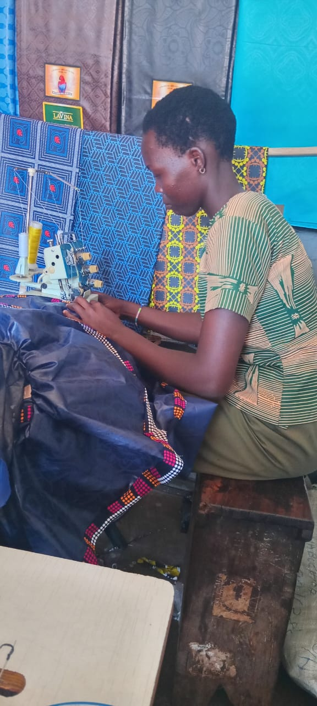

Provides a safe, practical learning space where vulnerable young people can rebuild confidence and purpose.


OUR IMPACT
See who we serve, how we support graduates and how the Centre plans to grow its impact.
TARGET BENEFICIARIES
POST-TRAINING
IMPACT OVERVIEW
Provides a safe, practical learning space where vulnerable young people can rebuild confidence and purpose.
Offers accessible vocational training to teenage mothers, school dropouts and people with disabilities.

Builds employable tailoring and fashion skills through hands-on learning and guided practice.

Improves household income potential by helping trainees gain marketable, income-generating skills.

Supports emotional wellbeing and resilience through mentorship, counseling and inclusive learning.

Helps graduates start small businesses with tool kits, production links and enterprise support.

Strengthens financial independence through savings, budgeting, microfinance linkages and enterprise coaching.

Creates a sustainable model for community growth by expanding training, alumni support and local market opportunity.

IMPLEMENTATION PLAN
Registration, premises, board formation, fundraising and equipment procurement.
First intake of 10–20 beneficiaries, trainer recruitment and course delivery.
Graduation, start-up kits, VSLA formation, second intake and M&E review.
Expand training tracks, reach 100+ beneficiaries annually and build sustainable income.